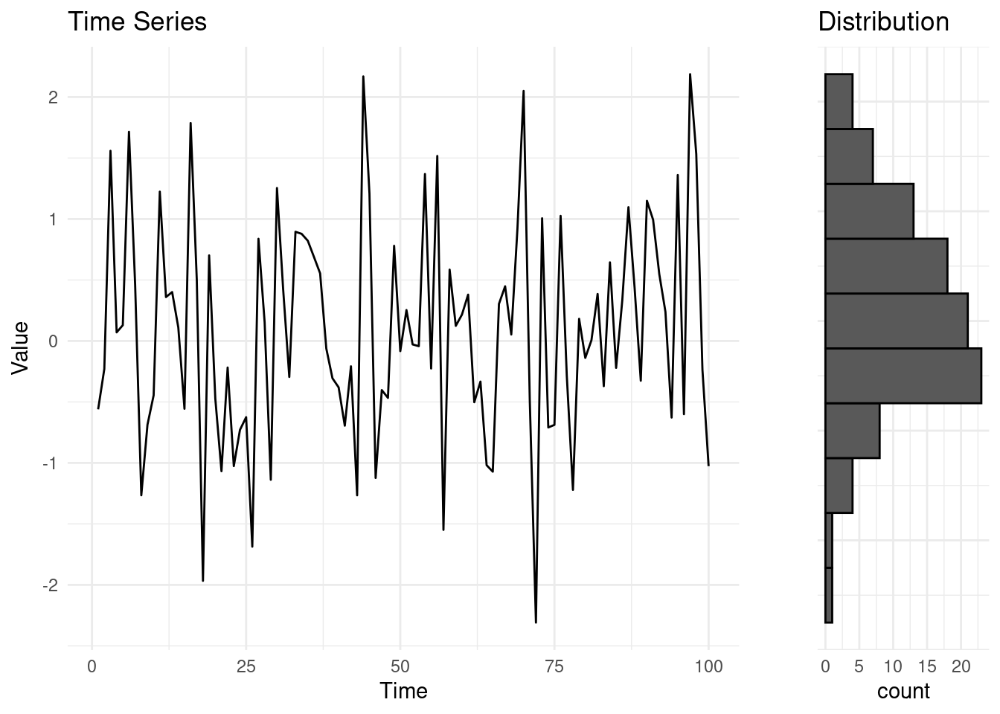
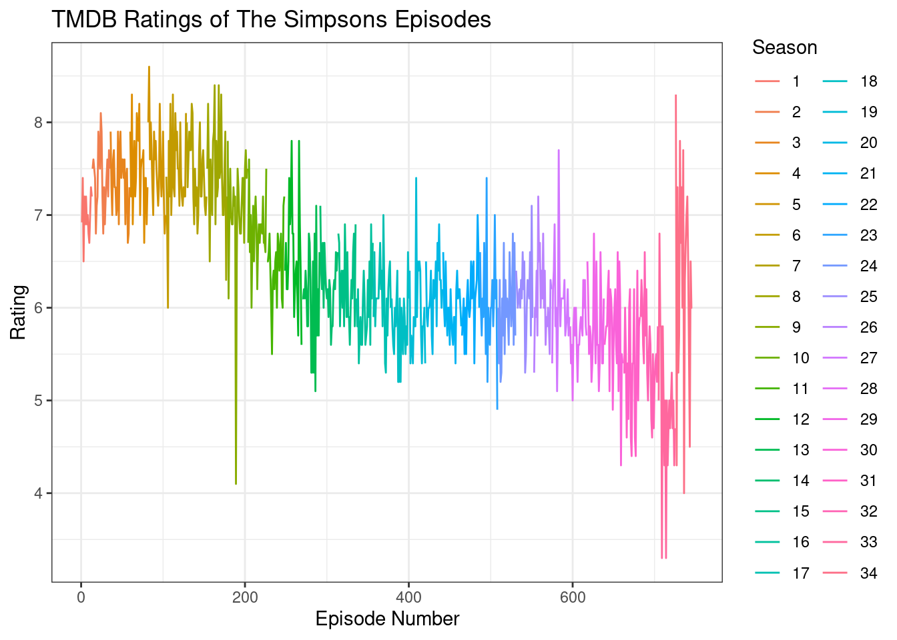

1 An Introduction to Changepoint Detection
1.1 Piecewise Stationary Time Series
In this module, we will be dealing with time series. A time series is a sequence of observations recorded over time (or space), where the order of the data points is crucial.
1.1.1 What is a time series?
In previous modules, such as Likelihood Inference, we typically dealt with data that was not ordered in a particular way. For example, we might have worked with a sample of independent Gaussian observations, where each observation is drawn randomly from the same distribution. This sample might look like the following:
\[ y_i \sim \mathcal{N}(0,1), \ i = 1, \dots, 100 \]
Here, \(y_i\) represents the \(i\)-th observation, and the assumption is that all observations are independent and identically distributed (i.i.d.) with a mean of 0 and variance of 1.
In this case, the observations do not have any particular order, and our primary interest may be in estimating parameters such as the mean, variance, or mode of the distribution. This is typical for traditional inference, where the order of observations is not of concern.
However, a time series involves a specific order to the data—usually indexed by time, although it could also be by space or another sequential dimension. For example, we could assume that the Gaussian sample above is a sequential process, ordered by the time we drew an observation. Each observation corresponds to a specific time point \(t\):

Formal Notation. In time series analysis, we typically denote a time series by using an index \(t\) to represent time or order. The time series vector is written as:
\[ y_{1:n} = (y_1, y_2, \dots, y_n) \]
Here, \(n\) is the total length of the sequence, and \(y_t\) represents the observed value at time \(t\), for \(t = 1, 2, \dots, n\). In our previous example, for instance, \(n = 100\).
Often, we are also interested in subsets of a time series (inclusive), especially when investigating specific “windows” or “chunks” of the data. We will denote as a subset of the time series, from time \(l\) to time \(u\), the following:
\[ y_{l:u} = (y_l, y_{l+1}, \dots, y_u) \]
Understanding and working with subsets of time series data is important for many applications, such as when detecting changes in the behavior or properties of the time series over specific intervals.
1.1.2 Stationary, non-stationary, and piecewise stationary time series
Time series can be classified into different categories based on their statistical properties over time. The three main types are stationary, non-stationary, and piecewise stationary time series. For example:
- Stationary Time Series: A time series is said to be stationary if its statistical properties—such as the mean, variance, and autocovariance—are constant over time. This implies that the behavior of the series doesn’t change as time progresses.
Mathematically, for a stationary time series \(y_t\), the expected value and variance are constant over time: \[ \mathbb{E}(y_t) = \mu \quad \text{and} \quad \text{Var}(y_t) = \sigma^2 \quad \forall \in \{1, ..., n\} \] In this example, the stationary time series was generated by sampling random normal variables \(y_t = \epsilon_t, \ \epsilon_t \sim \mathcal{N}(0, 1)\). We can see, very simply how, in this case: \[ \mathbb{E}(y_t) = \mathbb{E}(\epsilon_t) = 0, \forall t \in \{1, ..., 100\} \]
- Non-Stationary Time Series: A time series is non-stationary if its statistical properties change over time. Often, non-stationary series exhibit trends or varying variances. For example, a series with a trend (increasing or decreasing) is non-stationary because the mean is not constant.
A common form of non-stationarity is a linear trend, where the series grows over time. In our example, the non-stationary series is generated as: \[ y_t = \epsilon_t + 0.1 \cdot t , \ \epsilon_t \sim \mathcal{N}(0, 1) \] This creates a time series with a linear upward trend. In fact, similarly to what done before: \[ \mathbb{E}(y_t) = \mathbb{E}(\epsilon_t) + \mathbb{E}(0.1 \cdot t) = 0.1 \cdot t. \] Therefore: \[ \forall t_1, t_2 \in \{1, ..., 100\}, t_1 \neq t_2 \rightarrow \mathbb{E}(y_{t_1}) \neq \mathbb{E}(y_{t_2}) \]
- Piecewise Stationary Time Series: A piecewise stationary time series is stationary within certain segments but has changes in its statistical properties at certain points, known as changepoints. After each changepoint, the series may have a different mean, variance, or both.
In our example, the time series was stationary for the first half of the observations, but after \(t = 50\), a sudden shift occurs. Mathematically: \[ y_t = \begin{cases} \epsilon_t & \text{for } t \leq 50 \\ \epsilon_t + 5 & \text{for } t > 50 \end{cases}, \quad \epsilon_t \sim \mathcal{N}(0, 1) \] This abrupt change at \(t = 50\) introduces a piecewise structure to the data.
1.2 Introduction to changepoints
Changepoints are sudden, and often unexpected, shifts in the behavior of a process. They are also known as breakpoints, structural breaks, or regime switches. The detection of changepoints is crucial in understanding and responding to changes in various types of time series data.
The primary objectives in detecting changepoints include:
- Has a change occurred?: Identifying if there is a shift in the data.
- If yes, where is the change?: Locating the precise point where the change happened.
- What is the difference between the pre and post-change data? This may reveal the type of change, and it could indicate differences in parameter values before and after the change.
- How certain are we of the changepoint location?: Assessing the confidence in the detected changepoint.
- How many changes have occurred?: Identifying multiple changepoints and analyzing each one for similar characteristics.
Changepoints can be found in a wide range of time series, not limited to physical, biological, industrial, or financial processes. For instance, to give few examples:
ECG: Detecting changes or abnormalities in electrocardiogram (ECG) data can help in diagnosing heart conditions.

Electrocardiograms (heart monitoring), Fotoohinasab et al, Asilomar conference 2020. Cancer Diagnosis: Identifying breakpoints in DNA copy number data is important for diagnosing some types of cancer, such as neuroblastoma.
DNA copy number data, breakpoints associated with aggressive cancer, Hocking et al, Bioinformatics 2014. Engineering Monitoring: Detecting changes in CPU monitoring data in servers can help in identifying potential issues or failures.
Temperature data from a CPU of an AWS server. Source Romano et al., (2023)
1.2.1 Types of Changes in Time Series
As you might have noticed from the examples above, there’s not a strict way on which a time-series might change. Depending on the model, we could seek for different types of changes in the structure of a time series. Some of the most common types of changes include shifts in mean, variance, and trends in regression. For example, the CPU example above exihibited, in addition to some extreme observations, both changes in mean and variance.
- A change in mean occurs when the average level of an otherwise stationary time series shifts from one point to another. This type of change is often encountered in real-world data when there is a sudden shift in the process generating the data, such as a change in policy, market conditions, or external factors affecting the system.
In the plot above, the red lines indicate the true mean values of the different segments.
- A change in variance refers to a shift in the variability of the time series data, even when the mean remains constant. This type of change is important in scenarios where the stability of a process fluctuates over time. For example, in financial markets, periods of high volatility (high variance) may be followed by periods of relative calm (low variance).

1.2.1.1 3. Change in Regression (Trend)
A change in regression or trend occurs when the underlying relationship between time and the values of the time series changes. This could reflect a shift in the growth or decline rate of a process. For example, a company’s revenue might grow steadily over a period, then plateau, and later exhibit a quadratic or nonlinear growth trend.
1.2.2 The biggest data challenge in changepoint detection
One of the most widely debated and difficult data challenges in changepoint detection may not be in the field of finance, genetics, or climate science—but rather in television history. Specifically, the question that has plagued critics and fans alike for years is: At which episode did “The Simpsons” start to decline?
It’s almost common knowledge that “The Simpsons,” the longest-running and most beloved animated sitcom, experienced a significant drop in quality over time. Critics, die-hard fans, and casual viewers alike have pointed to a shift in humor, writing, and overall creativity. But pinpointing exactly when this drop occurred is the real challenge. Fortunately, there’s a branch of statistics that was practically built to answer questions like these!
I have downloaded a dataset (Bown 2023) containing ratings for every episode of “The Simpsons” up to season 34. We will analyze this data to determine if and when a significant shift occurred in the ratings, which might reflect the decline in quality that so many have observed.

In this plot, each episode of “The Simpsons” is represented by its TMBD rating, and episodes are colored by season. By visually inspecting the graph, we may already start to see some potential points where the ratings decline. However, the goal of our changepoint analysis is to move beyond visual inspection and rigorously detect the exact moment where a significant shift in the data occurs.
Jokes apart, this is a challenging time series! First of all, there’s not a clear single change, but rather an increase, followed by a decline. After which, the sequence seems rather stationary. For this reason, throughout the module, we will use this data as a running example to develop our understanding of various methods, hopefully trying to obtain a definitive answer towards the final chapters. But let’s procede in order…